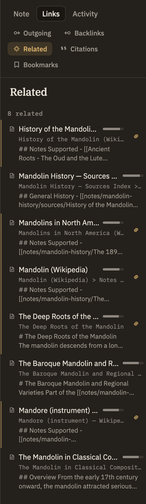

Docs/Right sidebar/Related
Related
The Related panel suggests notes, sources, and quoted excerpts that read like the one you're viewing — without either side having to link to the other. It finds connections by meaning, so it's the one panel that surfaces things you never thought to link together.
Backlinks and Outgoing links only ever show connections you made by typing a wiki-link. Related is different: it doesn't care whether two notes link to each other, only whether they cover similar ground. A note with no links at all can be full of related suggestions, and a heavily-linked note may have nothing related if nothing else you've written resembles it.
How matches are chosen
Minerva compares the meaning of the note you're viewing against everything else in your project and lists the closest matches first. Matching happens quietly on its own as you write and save — there's nothing to run or refresh.
Reading a result
Each result shows what kind of item it is, its title, the closeness bar, the heading of the part that matched best, and a short snippet of that text. Click a note or excerpt to jump straight to the matching section; click a source to open it. You can also drag any result into the editor to drop in a link to it, just like dragging a file from the sidebar.
When a note is a strong match and isn't already linked to the one you're viewing, it gets a gentle accent and a small link button — a quiet nudge that it might be worth connecting, not a demand. Clicking it drops a link to that note under a "See also" heading. The × beside it dismisses that one suggestion so it won't keep coming back. A note that's already linked can still show up here — being related and being linked aren't the same thing — it just won't get the nudge.
